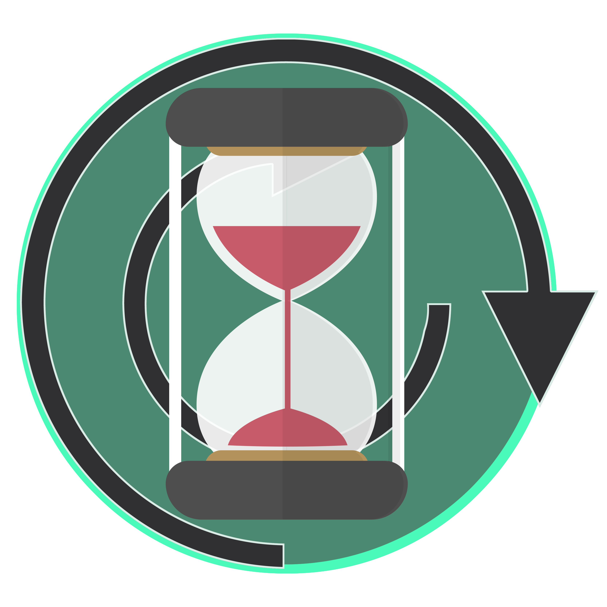

Tab Agent

Loading...
Load Model
Discover
Discover content placeholder...
Spaces
Spaces placeholder...
Library (Starred)
Starred items placeholder...
Inference Settings
System Prompt:
You are a helpful assistant.
Max New Tokens:
Threads:
Context Size:
Top K:
Temperature:
0.8
Repeat Penalty:
1.1
Top P:
0.95
Min P:
0.05
Log Management
View Logs
Reset DB
Session:
All
From:
All
Type:
All
Loading logs...
Chat History
Select Drive Files
Root
Selected:
Loading...